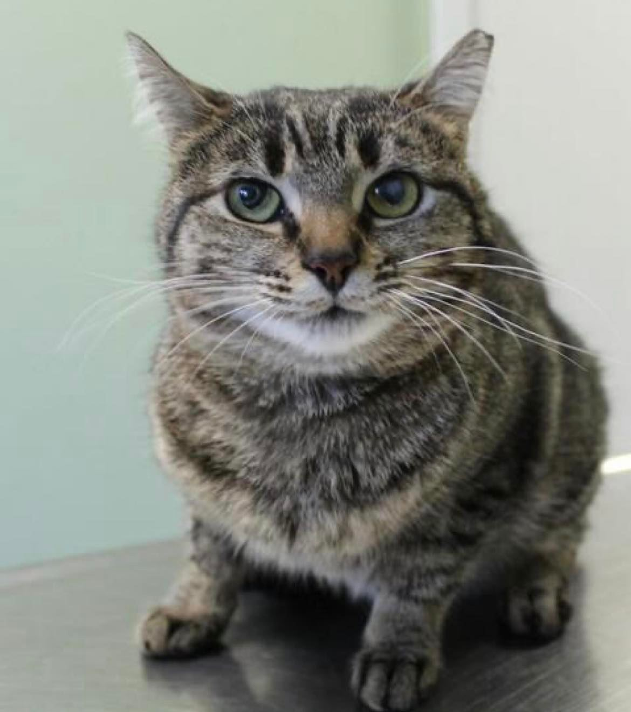
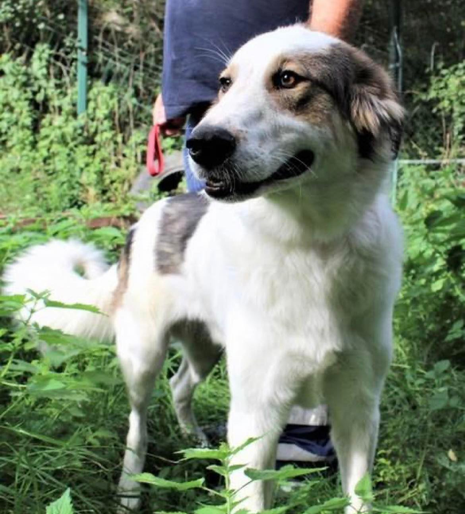
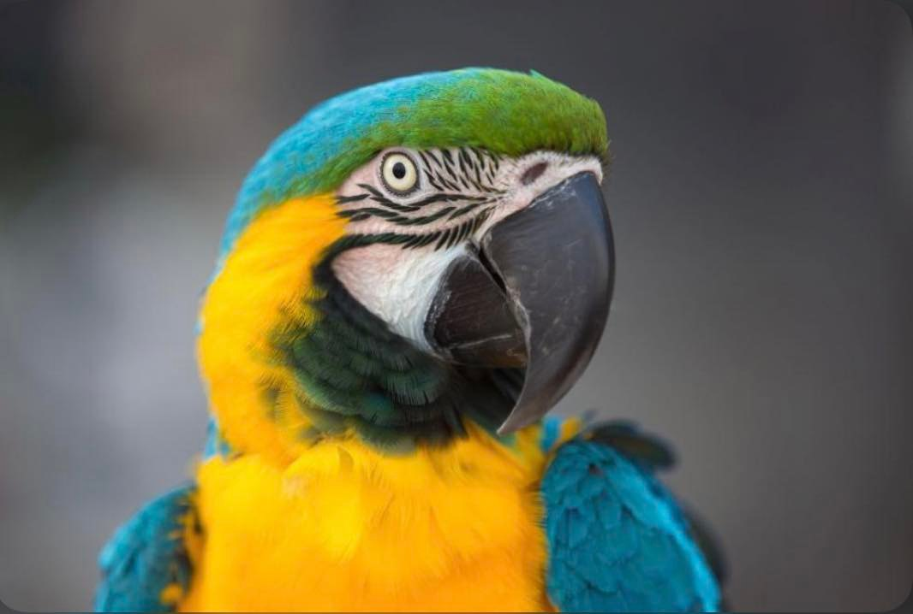

Котка
Име: Марияна
Пол: Женски
Предполагаема възраст: 1 г.
Размер: M / Средна котка котка
Черти на характера: Страхува се от непознати в началото и се нуждае от време, за да се отпусне и да започне да си играе. Социална е към хората, към други котки е предпазлива.

Куче
Име: Бъки
Пол: мъжки
Предполагаема възраст: 2 г.
Характер: eнергичен, дружелюбен, добродушен, игрив, разбира се добре с други кучета
Размер: М / средно куче
Статус: кастриран, чипиран, вътрешно и външно обезпаразителен, в отлично здраве, готов за осиновяване

Папагал
Име: Фари
Пол: мъжки
Предполагаема възраст: 3 г.
Характер: Страхлив, предпазлив и много срамежлив, но иначе добродушен и с мек характер. Нуждае се от време за социализация, за да свикне с нов човек.
Размер: S / малък папагал
Статус: в отлично здраве, готов за осиновяване